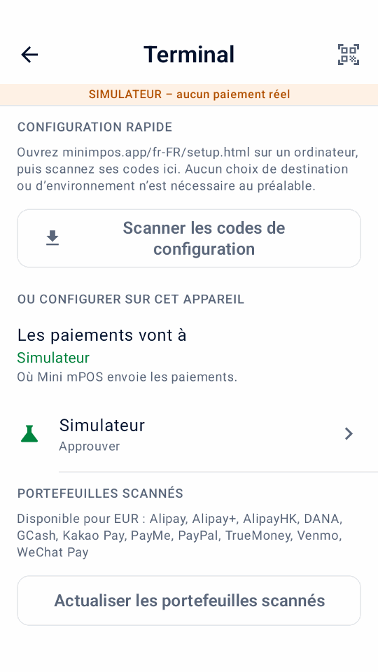

Guide
Démarrage rapide
Installez Mini mPOS, connectez-le à Adyen et vérifiez votre premier paiement TEST. Suivez uniquement les étapes de configuration de votre appareil.
Vous venez d'explorer ? Essayez le simulateur sans compte ni terminal Adyen.
Vérifiez les prérequis
Vérifiez ces exigences avant d'installer l'application. L'appareil exécute Mini mPOS ; le terminal de paiement prend la carte. Il peut s'agir du même appareil.
Choisissez une configuration d'appareil
- Sur un terminal Adyen
- Le paiement complet sur un seul appareil. Utilisez un terminal de paiement Adyen Android avec Android 9 ou version ultérieure. Vérifiez les modèles actuels dans le Guide des terminaux Adyen Android.
- Tablette ou téléphone avec terminal réseau
- Recommandé pour un comptoir. Une tablette ou un téléphone Android 9+ sur le même réseau local qu'un terminal Adyen. Mini mPOS n’est pas installé sur ce terminal.
- Tablette ou téléphone avec un terminal cloud
- Pour un appareil et un terminal sur différents réseaux. Les deux ont besoin d’un accès à Internet ; les paiements parviennent au terminal via Adyen.
- Tap to Pay sur un téléphone
- Pas de terminal séparé. Utilisez un téléphone avec communication en champ proche (NFC) et l'application Adyen Payments, activée par l'assistance Adyen. Vérifiez le Exigences téléphoniques Adyen et Pays et méthodes de paiement pris en charge par Adyen.
Comparer les configurations
| Configuration | Connexion | Reçus | Limites des fonctions |
|---|---|---|---|
| Sur un terminal Adyen | Internet ; connexion locale au terminal | Imprimante intégrée ou e-mail | Paiements hors ligne configurables en local ; aucun écran client séparé. |
| Tablette ou téléphone avec terminal réseau | Même réseau sur TCP 8443 ; internet | Imprimante du terminal, e-mail ou partage | Écran client séparé ; paiements hors ligne configurables en local. |
| Tablette ou téléphone avec un terminal cloud | Internet sur les deux appareils | Imprimante du terminal, e-mail ou partage | Écran client séparé ; aucun paiement hors ligne via le cloud. |
| Tap to Pay sur un téléphone | Internet ; téléphone NFC compatible | E-mail ou partage ; aucune imprimante | Ni pourboire sur terminal, écran client, MOTO/MKE, paiement hors ligne ou rapprochement du terminal. |
Les fonctions dépendent du terminal, du moyen de paiement et de la configuration Adyen. Testez les opérations nécessaires. Vérifier les capacités d'Adyen.
- L'impression nécessite un terminal avec une imprimante intégrée. S’il n’y en a pas, vous pouvez envoyer ou partager des reçus à la place.
- La numérisation des codes-barres, le remboursement des codes QR ou les codes de configuration nécessitent un appareil photo.
Préparer le réseau
Demandez à l'administrateur réseau du site d'autoriser les éléments suivants :
- Internet
- HTTPS sortant sur TCP 443 depuis l'appareil et le terminal vers
*.adyen.comet*.adyenpayments.com. Autorisez-les par nom de domaine, pas l'adresse IP, car les adresses IP d'Adyen changent. - Réseau local (pour les terminaux réseau)
- La tablette ou le téléphone doit atteindre l'adresse IP du terminal sur TCP 8443. Connectez les deux au même réseau et assurez-vous que l'isolation du client Wi-Fi (commune sur les réseaux invités) ne les sépare pas.
- Reçus par courrier électronique (facultatif)
- Accès sortant à votre serveur SMTP, généralement TCP 587 (STARTTLS) ou 465 (SSL/TLS).
Attribuez à chaque terminal réseau une adresse IP fixe avec une réservation DHCP dans votre routeur. Les données mobiles fonctionnent pour la tablette ou le téléphone dans les configurations cloud et Tap to Pay, mais pas avec un terminal réseau. Pour les exigences propres au terminal, voir le Guide de configuration du réseau Adyen.
Préparer les identifiants Adyen
Pour valider avec Adyen, vous avez besoin d'un compte marchand test actif avec les paiements en personne activés et un accès Customer Area. Commencez avec les informations d'identification TEST et un terminal TEST ou Adyen Payments Test. Pour LIVE, utilisez le compte réel, les informations d'identification et le terminal ou l'application Adyen Payments correspondants.
Pour créer ou modifier des informations d'identification, votre utilisateur Customer Area a besoin Manage API credentials ou Merchant admin. Il s'agit d'autorisations utilisateur et non de rôles pour la clé API.
Activez les modes de paiement POS que vous envisagez d'accepter ; suivre le Guide de configuration du mode de paiement Adyen. Mini mPOS utilise les méthodes configurées du terminal.
- Dans le Customer Area, accédez à Developers › API credentials. Créez un identifiant pour Mini mPOS et générez sa clé API ; voir le Guide d'identification Adyen API .
- Pour la clé API principale, activez ces rôles supplémentaires :
- Management API - Terminal actions read
- Management API - Terminal settings read and write
- Management API - Terminal settings Advanced read and write
- Cloud Device API role
- API tokenise payment details
- Pour LIVE, notez le Préfixe d’URL LIVE de Developers › API URLs.
- Pour Tap to Pay, Mini mPOS crée automatiquement un identifiant distinct destiné au commerçant avec le Adyen Payments App role et une clé client. Le support Adyen doit activer Tap to Pay et rendre ce rôle attribuable à partir des informations d'identification de votre entreprise.
- Si vous souhaitez configurer l'appareil manuellement :
- Notez le Compte marchand.
- Pour un terminal Adyen, un terminal réseau ou un Tap to Pay, recherchez le Clé partagée (identifiant, phrase secrète et version) sous Devices › Device settings › Integrations › Terminal API › Encryption key. Les terminaux cloud ne l'utilisent pas.
Vérifier tous les rôles requis
Conservez les rôles de paiement et Management API attribués par défaut ci-dessous, en plus des cinq rôles supplémentaires indiqués plus haut. Certains rôles par défaut peuvent avoir été retirés d’un identifiant existant. L’identifiant principal nécessite les mêmes rôles pour toutes les configurations ; seul l’identifiant distinct d’enregistrement du téléphone nécessite Adyen Payments App role.
- Merchant PAL webservice role
- Checkout webservice role
- Management API - API credentials read and write
- Management API - Payment methods read
- Management API - Stores read
- Management API - Accounts read
- Merchant Recurring role
Important
Mini mPOS n'a pas de serveur, les clés API sont donc stockées cryptées sur l'appareil. Créez des informations d'identification uniquement pour Mini mPOS avec uniquement les rôles API nécessaires à votre configuration. Définissez un PIN administrateur et révoquez les informations d'identification en cas de perte d'un appareil. Voir le politique de sécurité.
Remarque
Mini mPOS est indépendant ; il n'est pas créé, approuvé ou pris en charge par Adyen. Suivez la documentation liée d'Adyen pour les procédures de compte et de plateforme.
Installez l'application
Téléchargez l’APK signé minimpos-<version>.apk depuis la
dernière version.
- Terminal Adyen
- Dans le Customer Area, téléchargez l’APK et déployez-le sur vos terminaux ; voir le Guide de déploiement de l'application Adyen. Votre utilisateur a besoin d'une autorisation pour télécharger et déployer des applications.
- Ouvrez Mini mPOS sur le terminal, sélectionnez Connectez-vous à Adyen et appuyez sur Continuer.
- Tablette ou téléphone
- Ouvrez l’APK sur l'appareil et autorisez l'installation à partir de votre navigateur ou de votre gestionnaire de fichiers lorsque Android vous le demande.
- Ouvrez Mini mPOS, sélectionnez Connectez-vous à Adyen et appuyez sur Continuer.
Important
Installez chaque mise à jour à partir de la même source de signature. Un terminal rejette une mise à jour signée avec une clé différente. Pour créer et signer le vôtre, consultez le guide du contributeur.
Connectez-vous à Adyen
La connexion associe Mini mPOS à son terminal ou à l'application Adyen Payments et vérifie votre clé API Adyen. Suivez uniquement la partie correspondant à votre configuration. Chacun a deux options : l’assistant de configuration (recommandé), ou saisie manuelle dans Paramètres › Terminal.


Scanner les codes de configuration depuis un ordinateur
- Sur un ordinateur de confiance, ouvrez l’aide à la configuration. Les codes sont générés localement ; consultez la note sur l’hébergement et la confidentialité.
- Choisissez où Mini mPOS s'exécute et l'environnement, TEST ou LIVE.
- Choisissez Automatique (recommandé) pour saisir uniquement la clé API Adyen ; l'appareil recherche le reste. Choisissez Manuel pour saisir tous les détails de connexion.
- Entrez les détails demandés.
- Cliquez Créer des codes QR. Gardez la page ouverte : elle affiche le code de transfert à 12 caractères.
- Dans Mini mPOS, ouvrez Paramètres › Terminal et appuyez sur Scanner les codes de configuration ou l'icône QR en haut à droite. Lisez les instructions, appuyez sur J’ai déjà des codes et scannez chaque code.
- Vérifiez la destination et l'environnement, entrez le code de transfert et appuyez sur Vérifier et importer.
- Si on vous le demande, choisissez votre terminal. Pour Tap to Pay, terminez l’inscription lorsque l’application Adyen Payments s’ouvre. Rien n'est enregistré jusqu'à ce que tous les contrôles soient réussis.
Connecter un terminal Adyen
Conditions préalables
- Mini mPOS déployé sur le terminal
- Une clé API Adyen de l'environnement du terminal
- Accès Internet pour le terminal
- Aide à la configuration (recommandé)
- Dans l’assistant de configuration, choisissez Sur un terminal Adyen , l’environnement TEST ou LIVE du terminal et Automatique. Entrez la clé API, puis scannez les codes.
Manuel
- Dans Paramètres › Terminal › Adyen API, saisissez la clé API Adyen et le compte marchand, ainsi que le préfixe d’URL LIVE pour LIVE. Appuyez sur Rechercher un terminal à configurer pour tester l'accès à API et renseigner automatiquement la clé partagée, ou Test API pour continuer manuellement.
- Vérifiez ou saisissez la clé partagée et appuyez sur Tester la connexion.
Associez un terminal sur votre réseau
Conditions préalables
- Mini mPOS installé sur la tablette ou le téléphone
- Une clé API Adyen de l'environnement du terminal
- L'appareil et le terminal sur le même réseau, avec TCP 8443 ouvert entre eux
- Aide à la configuration (recommandé)
- Dans l’assistant de configuration, choisissez Sur tablette ou téléphone, avec un terminal sur le même réseau, l’environnement TEST ou LIVE du terminal et Automatique. Entrez la clé API, puis scannez les codes. Si plusieurs terminaux sont trouvés, choisissez le vôtre.
Manuel
- Dans Paramètres › Terminal, définir Les paiements vont à à Un terminal sur votre réseau. Sous Environnement, choisissez TEST ou LIVE pour correspondre au terminal.
- Sous Adyen API, saisissez la clé API Adyen et le compte marchand, ainsi que le préfixe d’URL LIVE pour LIVE. Appuyez sur Rechercher un terminal à configurer pour tester l'accès à l’API et choisir le terminal. Saisissez manuellement les détails manquants.
- Vérifiez ou saisissez l'adresse IP du terminal et ID du terminal (POIID). Les deux se trouvent sur l’écran d’informations sur l’appareil du terminal.
- Vérifiez ou saisissez la clé partagée et appuyez sur Tester la connexion.
Connecter un terminal cloud
Conditions préalables
- Mini mPOS installé sur la tablette ou le téléphone
- Une clé API Adyen de l'environnement du terminal
- Accès Internet pour l'appareil et le terminal
- Aide à la configuration (recommandé)
- Dans l’assistant de configuration, choisissez Sur tablette ou téléphone, avec un terminal par internet (cloud), l’environnement TEST ou LIVE du terminal et Automatique. Entrez la clé API, puis scannez les codes. Si plusieurs terminaux sont trouvés, choisissez le vôtre.
Manuel
- Dans Paramètres › Terminal, définir Les paiements vont à à Un terminal sur internet (cloud). Sous Environnement, choisissez TEST ou LIVE pour correspondre au terminal.
- Sous Adyen API, saisissez la clé API Adyen et le compte marchand, ainsi que le préfixe d’URL LIVE pour LIVE. Appuyez sur Rechercher un terminal à configurer pour tester l'accès à l’API et choisir le terminal. Saisissez manuellement les détails manquants.
- Vérifiez ou entrez le ID du terminal (POIID) et appuyez sur Tester la connexion.
Configurer Tap to Pay
Conditions préalables
- Tap to Pay et le Adyen Payments App role activé pour votre entreprise par Adyen ; contacter l'assistance Adyen
- Mini mPOS installé sur un téléphone pris en charge
- Une clé API Adyen et la clé partagée
- Depuis Google Play, installez Adyen Payments Test pour TEST ou Adyen Payments pour LIVE. Les deux peuvent rester installés.
- Dans Mini mPOS, ouvrez Paramètres › Terminal et sélectionnez Tap to Pay sur ce téléphone. Choisissez TEST ou LIVE sous Environnement; Mini mPOS ouvre uniquement l'application de cet environnement.
- Aide à la configuration (recommandé)
- Dans l’assistant de configuration, choisissez Sur un téléphone, avec Tap to Pay dans l'application Adyen Payments et TEST ou LIVE. Saisissez la clé API Adyen correspondante, le compte marchand et la clé partagée, et éventuellement un identifiant de magasin. Scannez les codes et appuyez sur Vérifier et importer. Mini mPOS crée les informations d'identification d'enregistrement et ouvre l'application Adyen Payments pour terminer l'enregistrement dans le cadre de l'importation.
Manuel
- Dans Paramètres › Terminal › Adyen API, saisissez la clé API Adyen et le compte marchand. Pour les paiements LIVE, saisissez également le préfixe d’URL LIVE. Appuyez sur Test API.
- Sous Tap to Pay, appuyez éventuellement sur Choisir un magasin ou entrez un identifiant de magasin. Aucune clé API distincte n’est nécessaire.
- Appuyez sur Configurer Tap to Pay et complétez l'inscription dans l'application Adyen Payments.
- Dans Mini mPOS, saisissez la clé partagée.
L'application Adyen Payments ne peut pas exécuter de test de connexion. Confirmez donc la configuration avec un Paiement TEST. Pour désenregistrer le téléphone plus tard, utilisez Supprimer ce téléphone.
Créer une clé de chiffrement manquante
Si un terminal physique ne dispose pas encore de clé de cryptage, la configuration propose Créer une clé de chiffrement après la réussite des vérifications des informations d'identification et des comptes.
- Vérifiez l’ID du terminal et l’environnement affichés, puis confirmez. Ne modifiez pas les paramètres de ce terminal ailleurs pendant la création de la clé.
- Si la connexion n'est pas encore vérifiée, mettez à jour la configuration du terminal ; voir récupération de la configuration des clés.
- Si la création est interrompue, appuyez sur Reprendre la configuration de la clé. Pour la configuration QR, scannez à nouveau les mêmes codes avec leur code de transfert.
Validez votre configuration TEST
- Dans Paramètres › Terminal, vérifiez que l'environnement est TEST.
Terminez par Tester la connexion pour vérifier l’accès à l’API et les vérifications de
connexion prises en charge.
- Terminal physique : exécuter Tester la connexion et vérifiez que ça passe.
- Tap to Pay : confirmez que le téléphone est enregistré dans Adyen Payments Test. Le contrôle de connexion valide uniquement le paramétrage : il n'y a pas de diagnostic du terminal. Utilisez le paiement test ci-dessous pour vérifier le comportement de paiement.
- Dans Paramètres › Paiements, vérifiez la devise. Dans Paramètres › Taxe, vérifiez les tarifs et si les prix incluent les taxes.
- Sur Accueil, appuyez sur Nouvelle vente, ajoutez un Article personnalisé et appuyez sur Débiter.
- Appuyez sur Payer et suivez le Guide de test Adyen POS pour un paiement réussi.
- Vérifiez que le résultat est approuvé et que le reçu contient le montant, la devise et la taxe corrects. Ouvrir la vente dans Historique. Faites correspondre son Référence PSP au paiement dans le TEST Customer Area.
- Rembourser le paiement et vérifiez le résultat final du remboursement dans le TEST Customer Area. Remboursement demandé n’est pas une confirmation définitive.
- Répétez la vente avec un scénario de refus de paiement du Guide de test Adyen POS. Vérifiez que Mini mPOS affiche un refus et non une approbation ; voir paiements refusés.
Avertissement
Si le résultat est inconnu, ne payez plus. Suivez le étapes de récupération d'abord.
Ensuite, configurez les produits, les reçus et l'accès du personnel dans Utilisation de Mini mPOS.
Allez en direct
Avertissement
Le basculement entre TEST, LIVE et le simulateur supprime tout l'historique des paiements sur l'appareil, y compris les données de récupération des paiements inachevés. Résolvez chaque paiement sous A besoin d’attention d'abord.
Avant d'utiliser les fonctionnalités optionnelles du terminal, consultez Capacités d'Adyen et testez votre destination réelle : pourboires sur le terminal, paiements partiels, invites de l'acheteur, dons et saisie manuelle de la carte, traitement hors ligne et rapprochement des terminaux. La disponibilité dépend de la configuration d’Adyen et de la destination du paiement.
- Dans TEST, essayez uniquement les flux de travail facultatifs que vous prévoyez d'utiliser : dépôts, pourboires pour les reçus, liens de paiement ou portefeuilles scannés. Les dépôts et les pourboires sur reçu réservent les fonds jusqu'à leur capture. Vérifiez les résultats finaux de la capture dans le Customer Area.
- Testez les méthodes d'envoi de reçus que vous envisagez d'utiliser : imprimez sur une vraie imprimante, envoyez un e-mail test ou partagez un reçu.
- Définir un PIN administrateur et, si nécessaire, un PIN responsable ; voir accès du personnel.
- Basculez vers le terminal LIVE ou l’application Adyen Payments LIVE, avec les informations d'identification LIVE. Pour un terminal réseau/cloud ou Tap to Pay, choisissez LIVE sous Environnement. Entrez le Préfixe d’URL LIVE; voir le Guide des points de terminaison en direct Adyen. Tap to Pay doit être à nouveau enregistré dans l'environnement sélectionné.
- Dans Paramètres › Terminal, vérifiez que l'environnement est LIVE.
Terminez par Tester la connexion pour vérifier l’accès à l’API et les vérifications de
connexion prises en charge.
- Terminal physique : exécuter Tester la connexion et vérifiez que ça passe.
- Tap to Pay : confirmez que le téléphone est enregistré dans le LIVE Adyen Payments application. Le contrôle de connexion valide uniquement le paramétrage : il n'y a pas de diagnostic du terminal.
Pour les contrôles quotidiens et le rapprochement, voir Clôturer la journée.
Essayez le simulateur
Explorez Mini mPOS sans compte ni terminal Adyen. Aucune carte n’est débitée.
- Installez l’application sur un téléphone ou un émulateur Android 9+.
- Sur l’écran d’accueil, sélectionnez Essayez une démo plutôt que Scanner les codes de configuration ou Connectez-vous à Adyen, puis touchez Continuer.
- Dans Paramètres › Simulateur, choisissez le résultat du paiement, le délai et la présence d’une imprimante. Activez Approbations hors ligne pour voir les avertissements hors ligne dans l’historique et le rapprochement du terminal.
Dans Paramètres › Données et transfert, utilisez Ajouter des exemples de données ou Supprimer les exemples de données. Les exemples sont signalés comme des démos et comptent dans les totaux et rapports des jours de démo ; les ajouter remplace les informations commerciales du reçu par un café fictif, et les supprimer conserve vos propres produits, historique et paramètres.
Les liens de paiement fonctionnent hors ligne sans identifiants API, et leurs écrans et reçus sont signalés comme des démos. Leurs QR codes ne peuvent pas encaisser de paiement ; touchez Simuler le paiement pour en terminer un.
Le simulateur montre le comportement de Mini mPOS, pas ce que votre terminal ou votre compte Adyen prend en charge. Des fonctions comme le guidage audio, les approbations hors ligne et les capacités d’Adyen sont imitées : testez-les sur un vrai terminal TEST avant de vous y fier.
Prêt à vous connecter ? Dans Paramètres › Simulateur, touchez Configurer des paiements réels, puis Continuer la configuration. Confirmer TEST ou LIVE supprime tout l’historique local ; les exemples de produits et les informations du reçu restent, donc supprimez les exemples et vérifiez les informations commerciales avant de vrais paiements. Commencez par TEST.